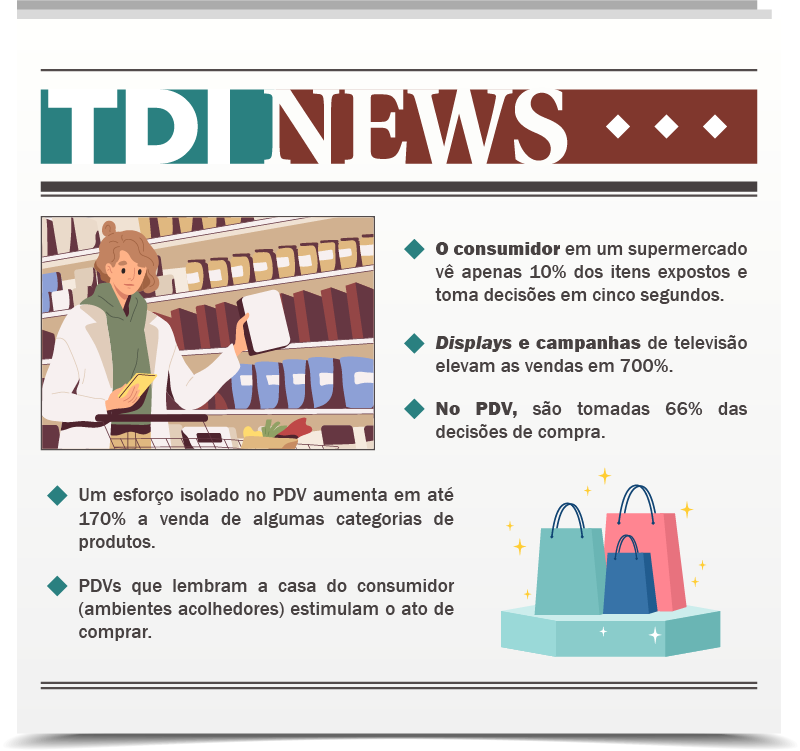

O visual merchandising representa a fusão entre a arte e a ciência, buscando ressaltar os produtos de maneira visualmente atraente. Essa estratégia desempenha o papel de uma linguagem de comunicação entre os varejistas e os consumidores, transmitindo informações por meio de imagens e exibições dos produtos. Assim como toda linguagem contém suas próprias regras e lógica, o merchandising visual segue princípios e diretrizes específicos. Embora seja frequentemente vinculado ao varejo de moda, como descrito por Ebster e Malhotra (2013), essa prática pode ser adaptada de várias maneiras para realçar as características de diferentes tipos de produtos.
Por exemplo, no caso de uma loja de vestuário, para exibir roupas de uma forma atrativa, utilizam-se manequins elegantes. Já uma padaria poderia apresentar seus doces e salgados mais refinados em utensílios de vidro. No caso de um supermercado, os vegetais podem ser organizados por tipo e cor. Uma perfumaria pode utilizar expositores com materiais refinados com uma boa iluminação para expor produtos de beleza.
Com uma estratégia eficaz de visual merchandising, os produtos ganham destaque naturalmente nas vendas. Além disso, a maneira como os produtos são exibidos contribui para a imagem global da loja. Por exemplo, um varejista de descontos pode optar por usar suportes simples para mostrar os produtos, enquanto uma mercearia especializada pode preferir utilizar mesas de exposição, prateleiras e estantes elegantes para exibir seus itens. Portanto, é crucial que a estratégia de apresentação visual se alinhe com outros elementos do design da loja, como o leiaute e o ambiente, para criar uma impressão coesa e harmoniosa.
Loja de vestuário masculino
Fonte: Freepik (2024)
Fotografia do interior de uma loja de roupas masculina. Há três manequins dispostos enfileirados e um visual merchandiser organizando as roupas. Há roupas dobradas nas prateleiras ao fundo e araras com roupas à esquerda.
Panificadora e confeitaria
Fonte: Freepik (2024)
Fotografia do interior de uma panificadora e doceria. Na imagem há uma mulher com avental, organizando doces no balcão em boleiras de vidro. Ao fundo, há máquinas para fazer café.
Supermercado: seção de hortifruti
Fonte: Freepik (2024)
Fotografia do interior de um supermercado na seção de hortifrúti. Há uma mulher de costas escolhendo laranjas. Todos os produtos estão empilhados e separados por tipo e cor.
Expositor de produtos de beleza e cosméticos
Fonte: Freepik (2024)
Fotografia de um expositor de mármore com diversos tamanhos e alturas para exposição de diversos produtos, como: perfumes, dermocosméticos, creme hidratante e xampu.
Ao planejar a estratégia de visual merchandising, é fundamental considerar diversos aspectos. Como é comum no marketing, pensar na apresentação visual do ponto de vista do consumidor pode ser extremamente útil. Quais são as expectativas dos consumidores, quando entram em uma loja, com relação à forma como os produtos são apresentados? As necessidades a que uma loja deve atender podem ser resumidas em quatro princípios, conforme descrito por Ebster e Malhotra (2013).
Apesar de ser óbvio, os autores registraram em suas observações em várias lojas, ao longo de duas décadas, produtos escondidos atrás de expositores e a ausência completa de certos produtos nas prateleiras. O estoque não era regularmente reabastecido e nenhum esforço era feito para preencher os espaços vazios nas prateleiras. Os consumidores só adquirem aquilo que veem, e a principal missão do visual merchandising é garantir a visibilidade dos produtos.
Os consumidores costumam interagir fisicamente com a maioria dos produtos antes de adquiri-los. Embora a visão seja primordial para obter informações, o toque ajuda os consumidores a estabelecer uma conexão emocional com um item. Ver é crer, mas tocar é sentir, por isso, os produtos devem estar acessíveis ao consumidor no momento da compra. A suavidade de um suéter de caxemira, a ergonomia de segurar um telefone celular, as curvas atraentes de um frasco de xampu e a sensação de sentar em um sofá macio, todos estes elementos vendem o produto. Além disso, oferecer aos consumidores a oportunidade de experimentar os produtos é a maior vantagem das lojas físicas sobre os varejistas on-line. No entanto, muitas lojas de varejo utilizam vitrines trancadas ou adotam estratégias para evitar que os consumidores manuseiem e selecionem os produtos por conta própria (por exemplo, colocando-os em prateleiras altas que pessoas mais baixas não conseguem alcançar). Embora seja compreensível manter itens valiosos trancados para evitar furtos, produtos de menor valor devem estar expostos para fácil alcance.
Os consumidores desejam ter pleno controle sobre suas decisões. O visual merchandising deve ser empregado para proporcionar-lhes uma sensação de liberdade e diversidade de escolha, não para induzi-los a fazer uma compra. Algumas lojas oferecem intencionalmente um número limitado de opções. Essa estratégia segue o princípio da escassez, baseado na ideia de que, ao tornar itens valiosos mais raros, ao limitar artificialmente sua disponibilidade, isso aumentará o valor percebido desses bens. Exemplos disso são edições limitadas ou produtos disponíveis apenas por um curto período de tempo.
O princípio da escassez pode ser parte integrante de uma estratégia de merchandising visual bem-sucedida. No entanto, se utilizado em excesso, pode restringir a sensação de liberdade do consumidor, diminuindo, por sua vez, o prazer da experiência de compra. Ao mesmo tempo, oferecer um número excessivo de opções também apresenta desafios. Quando confrontados com uma ampla gama de produtos, os consumidores geralmente se sentem confusos e sob pressão. Portanto, é crucial adotar medidas para mitigar o risco de pressionar excessivamente os consumidores, fornecendo-lhes um conjunto equilibrado de opções.
Os autores destacam que a quantidade de opções nem sempre é benéfica para as decisões de compra. Embora os consumidores sintam-se atraídos por uma ampla gama de opções, quando confrontados com uma variedade excessiva, muitas vezes se sentem sobrecarregados e têm dificuldade em tomar uma decisão final.
Nesse sentido, otimizar a estratégia de visual merchandising pode ajudar a evitar os efeitos negativos decorrentes de uma escolha excessiva. Existem duas abordagens principais para lidar com isso:
Uma estratégia eficaz é organizar os produtos de forma seletiva e clara. Isso pode ser alcançado com o destaque de apenas algumas alternativas, mas mantendo as outras disponíveis, caso sejam solicitadas. Assim, uma abordagem seletiva e clara na apresentação de produtos pode ajudar os consumidores a tomarem decisões mais informadas e satisfatórias, aumentando, ao mesmo tempo, as vendas da loja.
O conceito de exposição de produtos, também conhecido como exibitécnica, refere-se à arte e técnica de dispor, exibir e apresentar produtos, como definido por Ferracciù (2007). Essa prática busca proporcionar maior visibilidade a marcas, produtos e serviços, facilitando o contato visual e físico do consumidor com os itens, enquanto também realça o ambiente da loja.
Neste sentido, é possível afirmar que, em um ponto de venda (PDV), tudo que está exposto em um determinado local tem razão de ser. Nada é por acaso na exposição de produtos. A intenção é atrair e seduzir os consumidores, mexendo com os seus sentidos e a sua emoção.
Segundo Silva (2021), não é suficiente apenas expor os produtos em prateleiras ou cabides. É fundamental repensar o mix de produtos, as marcas disponíveis, a comunicação no ponto de venda, o design das embalagens e a posição dos produtos no mobiliário. À medida que os estudos de marketing avançaram e a compreensão sobre o consumidor se aprofundou, a exposição de produtos passou a ser guiada não apenas por intuição, mas também por resultados de testes e estudos, como aqueles derivados da ergonomia, do rastreamento de movimento ocular (eye tracking) e do neuromarketing.
Loja de produtos naturais Quitanda do Cereal, em Pato Branco/PR
Fonte: Sarturi apud ArchDaily (2024)
Fotografia do interior de uma Loja de produtos naturais, bem iluminada do lado esquerdo por um grande plano de vitrine, que ocupa todo o vão da loja. Na vitrine há vários sacos de cereais com produtos expostos. Do lado direito da imagem há um expositor baixo, com portas e canto curvo, em MDF verde-claro. A parte superior do expositor são prateleiras abertas, com caixas de acrílico, expondo os produtos naturais a granel. Na parede que fica entre a vitrine e o expositor estão penduradas ecobags em tecido cru, com o letreiro “é tempo de comer bem”. O piso é em porcelanato acetinado na cor marfim, a parede está pintada na mesma cor do piso até a metade inferior e, para cima, está pintada na cor branca.
Segundo Silva (2021), não é suficiente apenas expor os produtos em prateleiras ou cabides. É fundamental repensar o mix de produtos, as marcas disponíveis, a comunicação no ponto de venda, o design das embalagens e a posição dos produtos no mobiliário. À medida que os estudos de marketing avançaram e a compreensão sobre o consumidor se aprofundou, a exposição de produtos passou a ser guiada não apenas por intuição, mas também por resultados de testes e estudos, como aqueles derivados da ergonomia, do rastreamento de movimento ocular (eye tracking) e do neuromarketing.
Entretanto, a preocupação com a exposição de produtos não se restringe apenas a mudanças comportamentais. É crucial compreender que o contexto comercial também sofreu transformações significativas. Observa-se que os espaços comerciais estão diminuindo fisicamente, devido aos altos custos de manutenção do metro quadrado nas áreas metropolitanas.
A competição, a diversidade de produtos e serviços, o aumento da densidade populacional e o custo de vida nessas regiões contribuem para essa redução no tamanho das lojas. Gerenciar categorias e a exposição de produtos nesses espaços menores torna-se, portanto, um desafio significativo para o visual merchandising.
Neste cenário, o domínio da exibitécnica é fator importante para obtenção de resultados positivos nos pontos de venda. Tudo iniciará com um planograma, desenvolvido pelo profissional de visual merchandising.
Segundo Ebster e Malhotra (2013, p. 99), planograma é um desenho esquemático de prateleiras ou de qualquer outro tipo de instalação, que ajuda a otimizar a utilização de espaço disponível em uma loja de varejo. É um esquema gráfico ou diagrama que define a disposição, a organização e a localização dos itens nas prateleiras, gôndolas ou em outros espaços de exibição dentro da loja, criando uma correlação entre os produtos e otimizando as vendas.
No exemplo a seguir, você pode observar o planograma de uma loja de roupas. Perceba que, por meio de desenhos simples, é possível idealizar a melhor distribuição dos produtos, alternando peças e formando volumes ou grupos.
Planograma de uma loja de roupas
Fonte: Ebster e Malhotra (2013, p. 99)
Planograma, com um desenho simples, em preto e branco, apresentando a distribuição de produtos em uma parede de exposição de uma loja. Na parte superior está um varão tipo cabideiro reto, no qual é prevista a distribuição de quatro suportes retos. Cada suporte tem previsão de alocação de dez peças de camiseta de cor sólida, sendo um estilo de camiseta por suporte. No meio, abaixo do suporte, está prevista a alocação de uma prateleira grande, com cinco pilhas de camisetas dobradas, sendo um estilo e quatro peças por pilha. No cabideiro reto inferior ficarão as calças e saias, sendo seis blocos alternados, com um estilo e três peças por bloco.
Os planogramas são elaborados considerando diversos fatores, como a sazonalidade, as tendências de mercado, o comportamento do consumidor, a disponibilidade de espaço na loja e os objetivos específicos de marketing e vendas da empresa. Esses desenhos esquemáticos são ferramentas valiosas para os varejistas, pois ajudam a otimizar a disposição dos produtos para alcançar melhores resultados de vendas e aprimorar a experiência do cliente dentro do estabelecimento.
Existem várias maneiras de criar planogramas, que podem incluir o uso de softwares de edição de imagem, como Photoshop, ou de vetorização, como CorelDRAW e Illustrator. Além disso, existem programas especializados que podem ajudar, como MockShop e PlanogramBuilder, assim como softwares em 3D, por exemplo, SketchUp e AutoCAD 3D. Também é possível produzir um planograma por meio de fotografias ou vídeos feitos em uma loja experimental ou estúdio fotográfico.
Mas quais técnicas de exposição de produtos (exibitécnicas) podem ser utilizadas em um planograma? Quer conhecê-las?
Organizar os volumes de produtos por meio de uma correlação de uso ou consumo é técnica fundamental para otimizar e elevar as vendas nos PDVs. Considere, por exemplo, a organização dos produtos de um supermercado. Imagine que você chegou ao balcão da padaria para comprar um simples pão francês para o seu café da manhã. Observe que os pães estão dispostos lado a lado, por tipo. Lembre-se de que sua intenção de compra era apenas o pão. Mas, na fila do pão, você viu que tinha geleia e então pensa: “geleia com o pãozinho é muito bom”. Você pega o pão e a geleia, dá alguns passos e vê que, bem ao lado da padaria, estão os frios. “Um pão quentinho sem queijo não tem nenhum sentido”, não é mesmo?.
Você percebe como foi induzido nesse momento? A sua intenção de compra na ida ao supermercado era apenas o pão francês, mas saiu de lá com pão, geleia e queijo.
Padaria de supermercado
Fonte: Flickr (2024)
Foto da padaria de um supermercado com expositor baixo, tipo vitrine, contendo pães expostos. No canto do expositor estão diversos potes de geleias e ao lado da padaria fica o setor de frios, também com expositor tipo vitrine, mais baixo.
Portanto, saber organizar os volumes de produtos e correlacioná-los é uma excelente estratégia de visual merchandising. Na distribuição dos volumes, trabalhar com linhas e formas permite criar movimento e dimensionamento na composição e, assim, transmitir sensações aos usuários do espaço, além de facilitar a reposição do estoque. Mas como trabalhar volumes?
Essa é a disposição de mercadorias mais indicada para expositores de parede. Os produtos ficam pendurados ou são colocados em prateleiras em fileiras horizontais. Essa organização transmite uma sensação de calma, de repouso.
Os produtos podem ser distribuídos por cor ou por estilo. Camisetas florais, por exemplo, podem ser expostas todas em uma única fileira, assim como uma série de copos de cristal pode ser disposta em uma mesma prateleira.
É importante lembrar que os produtos que mais chamarão atenção serão aqueles que estiverem na altura dos olhos do consumidor. Esse assunto será abordado, em seguida, neste mesmo material.
Loja Namari Multibrand/Retail Design LAB
Fonte: Mossin apud ArchDaily (2021)
Loja de roupas feminina, com pé direito alto, paredes curvas revestidas com cortinas em tecido rosa. Próximo da parede curva estão dispostos expositores do tipo arara suspensas no teto, em metal dourado, formando um volume horizontal em toda a parede.
Quando os volumes de produtos são expostos em linha vertical, transmite-se a sensação de segurança, de energia. Assim como na disposição horizontal, a organização vertical deve utilizar linhas de produtos. No entanto, os volumes deverão ser expostos de cima para baixo, em uma parede. É possível expor diferentes versões de um mesmo produto ou definir por cor a forma de exposição. Além disso, é possível utilizar produtos correlacionados, como calcinha e sutiã; ou camiseta, bermuda, meia e calçado, criando uma distribuição anatômica dos produtos.
Loja Nike Corinthians
Fonte: CDA Design (c2020)
Fotografia do interior de uma loja de artigos esportivos, com expositor de parede ao fundo, expondo, na parte superior, a camiseta do time do Corinthians. Combinando com a camiseta em distribuição vertical vem a bermuda do uniforme e, ao lado, é possível ver as meias, formando uma combinação em volume vertical de distribuição.
Quando há uma quantidade grande de volumes para expor, distribuir os produtos por categoria é o ideal. Xícaras devem ser expostas junto às outras xícaras; pratos, com pratos; e assim por diante. Essa distribuição auxilia na busca dos produtos e também na reposição e estoque.
Loja de artigos para casa
Fonte: Tovianski apud Veja (s. d.)
Fotografia do interior de uma loja de artigos para casa, com expositores tipo mesa. Xícaras, pratos e outras louças estão expostos em volumes únicos, juntos.
Imagine uma grande parede de um PDV com produtos expostos de forma espelhada. Pois é exatamente em paredes que a disposição simétrica funciona muito bem. É claro que essa parede precisa ser grande, para que toda a linha de produtos possa ser exposta e para a simetria ficar aparente.

Folio Concept Store/Archi.lab
Fonte: Mayer apud ArchDaily (2023)
Fotografia da parede interna de uma loja conceito de mobiliário, na qual tem a exposição de amostras de tecido e de materiais, distribuídas de forma simétrica na parede, com tecidos pendurados expostos em duas linhas, do lado direito e esquerdo da imagem. Entre as linhas de tecido, bem no meio, estão amostras de outros materiais, também simetricamente enfileirados.
Dispor os produtos por grupos de cores é uma das maneiras mais simples de chamar a atenção para um determinado produto. O cérebro humano tende a buscar uma organização lógica. Uma mudança cromática bem-definida na exposição de um mesmo produto chama naturalmente a atenção do consumidor e cria o volume.
Loja Haight Clothing Cidade Jardim/AR Arquitetos + Helena Meirelles
Fonte: Cairoli apud ArchDaily (2023)
Fotografia do interior de uma loja de roupa feminina, com paredes curvas, expositor tipo arara tubular em metal dourado, fixado na parede, também curvo, acompanhando a extensão da parede. Roupas estão agrupadas em volumes por cor, expostas em cabides de madeira.
Além de pensar na exposição de volumes em um PDV, é necessário pensar na altura em que esses volumes ficarão expostos. Até que altura o cliente alcança? Em qual altura o produto fica mais visível e com exposição imediata? Em lojas de artigos para crianças (roupas ou brinquedos), é necessário pensar em uma altura diferenciada para as gôndolas e araras ou só interessa pensar em quem paga o produto?
Observe em seguida o quadro do cone visual dividido em quatro níveis, segundo Silva (2021):
Cada nível demanda técnicas específicas para favorecer a visibilidade dos produtos e garantir que sejam notados pelos consumidores no ambiente de venda.
| Nível 3 | Acima de 1,80m: exposição de produtos (“displayagem” ou uso de displays), com elementos decorativos/ambientação |
| Nível 1 | 0,80 a 1,80 m: produtos de venda por impulso, ofertas urgentes, produtos sazonais, de alto valor agregado, tendências passageiras (modinhas) e anúncios |
| Nível 2 | 0 a 0,80 m: produtos com referencial de destino – básico, tendências passageiras (modinha), acessórios, infantil e calçados (esse nível é o nível 1 para as crianças) |
| Nível 4 | Piso: deve-se conduzir o cliente com trilhas e usar o solo como espaço de comunicação e interação |
Níveis do cone visual e seus usos
Fonte: Adaptado de Silva (2021)
A imagem a seguir baseia-se no que dispõe a NBR 9050 (2020, p. 17), que trata da acessibilidade a edificações, mobiliário, espaços e equipamentos urbanos. O recurso demonstra um pouco mais do alcance manual frontal de uma pessoa, apresentando as dimensões em metros.
<--IMAGEM DO GIF-->
Legenda:
A1: altura do centro da mão estendida ao longo do eixo longitudinal do corpo
B1: altura do piso até o centro da mão, com o antebraço formando ângulo de 45° com o tronco
C1: altura do centro da mão, com o antebraço em ângulo de 90° com o tronco
D1: altura do centro da mão, com o braço estendido paralelamente ao piso
E1: altura do centro da mão, com o braço estendido formando 45° com o piso = alcance máximo confortável
F1: comprimento do antebraço (do centro do cotovelo ao centro da mão)
G1: comprimento do braço na horizontal, do ombro ao centro da mão
Pesquisas de visual merchandising apontam que produtos expostos dentro do campo visual humano são percebidos rapidamente pelo consumidor. Por isso, se o projeto for voltado para um determinado público-alvo, como crianças, por exemplo, é preciso pensar sim no campo visual delas e adaptar as alturas para que elas possam alcançar os produtos.
Além de conhecer a altura alcançada pelo campo visual dos clientes, é necessário conhecer também os focos visuais do consumidor, ou seja, como ele observa a loja quando entra nela. O que ele olha em primeiro lugar? Como se pode chamar a atenção para algo que se quer vender mais?
Segundo estudos realizados pelo Serviço Brasileiro de Apoio às Micro e Pequenas Empresas (Tedeschi, 2017), ao se deparar com uma gôndola, o consumidor olha, em primeiro lugar, para o centro dela. Em seguida, olha para o alto, à esquerda, e fecha um círculo, olhando para a parte inferior do móvel e terminando no lado direito. Portanto, o local nobre do PDV é o centro da gôndola, mais precisamente na altura dos olhos (de 1,50 m a 1,60 m).
Mulher comprando tênis
Fonte: Pexels (2024)
Fotografia de mulher de origem oriental, cabelo longo e roupa casual, pegando um tênis branco que está na altura dos seus olhos, em um expositor de loja.
Você sabia que, em um supermercado, as empresas pagam para ter seus produtos expostos em espaços privilegiados? O local mais caro é a altura de 1,50 m, no meio da gôndola. Observe este esquema:
Percentual de impacto visual na exposição de produtos
Fonte: Senac EAD (2024)
Ilustração de um expositor de loja em que há dois manequins com vestidos e, entre eles, seis araras embutidas na parede e mostrando três camisetas coloridas acima e três abaixo. Na camiseta que no meio, na parte de cima, há a numeração 100%, na que está no meio, na parte de baixo, está a numeração 30%. Entre a camiseta de baixo e o vestido, tanto de um lado quanto de outro, há a numeração 50%.
Com relação ao impacto visual, o centro da exposição de produtos na altura de 1,50 m a 1,60 m é o ponto que chama 100% da atenção do consumidor. As laterais do expositor contabilizam 50% da atenção. Já a parte inferior da exposição atrai 30% da atenção do consumidor.
Portanto, produtos de maior valor e margem de lucro nas prateleiras devem ser posicionados ao nível dos olhos (entre 80 e 160 cm), enquanto os itens de giro rápido, menor vendagem e margem menor devem ficar nas prateleiras inferiores.
Quando se cria o planograma de um PDV, é preciso dar atenção à organização dos elementos e das formas. É importante a busca por equilíbrio, para possibilitar que o usuário do espaço consiga transitar livremente pela loja e entenda como deverá fazê-lo.
Os elementos podem ser distribuídos de maneira simétrica ou assimétrica. Na simetria, a distribuição dos elementos e das formas segue um eixo central, dividindo o ambiente em dois lados equivalentes em formas, volumes, alturas, quantidade e cores.
Disposição simétrica de produtos
Fonte: Parente apud ArchDaily (2023)
Fotografia interna de loja de roupas femininas com piso, paredes e forro na cor marfim. A composição da parede frontal e dos móveis em frente é simétrica, com duas poltronas com encosto curvo, uma do lado esquerdo e outra do lado direito, uma de frente para a outra. Há um espelho em arco instalado na parede, na posição central. De cada lado do espelho tem uma arara suspensa tubular na cor preta, com roupas expostas.
Em assimetria, os elementos são distribuídos de modos variados e diferentes em cor, volume, quantidade e ocupação dos espaços. Lojas de brinquedos, por exemplo, utilizam muito esse recurso.
Considerando o ponto de vista do consumidor, existem importantes dicas com relação ao PDV:
A possibilidade de ter o estoque dentro da loja é interessante, pois o vendedor não precisará se ausentar durante o atendimento. Ele tem o estoque ao alcance das mãos, reduzindo o tempo de espera do cliente e, consequentemente, não dando tempo para que esse cliente pense muito sobre a compra.
Laruccia (2018, p. 77) apresenta alguns dados interessantes quanto a esse assunto. Confira:
Em suma, a estratégia de exposição de produtos dentro de um espaço comercial é um elemento crucial para aprimorar a experiência do cliente, impulsionar as vendas e fortalecer a identidade da marca. A aplicação dessas técnicas e o cuidado na disposição dos produtos não apenas influenciam a decisão de compra, mas também promovem uma jornada de compras mais agradável e intuitiva para os consumidores. A constante análise e adaptação dessas estratégias às mudanças de mercado e preferências dos clientes são fundamentais para o sucesso contínuo do ponto de venda, permitindo o engajamento eficaz e a satisfação do consumidor durante sua visita à loja.
De acordo com Silva (2021), os métodos tradicionais de apresentação agrupam produtos com base em sua categoria taxonômica, como diferentes tipos de mesas (de canto, de jantar, escrivaninhas), ou de acordo com seu status, como produtos de luxo em contraste com itens cotidianos.
Por exemplo, em lojas de eletrônicos, televisores costumam ser organizados por tamanho ou agrupados por marca. A disposição pode incluir produtos variados (marcas diferentes, tamanhos diferentes) colocados em sequência. Há diversas maneiras de utilizar adereços no visual merchandising tradicional. Um barril, por exemplo, colocado na seção de vinhos de um supermercado remete à tradição do amadurecimento do vinho, enquanto uma tela de toque ao lado pode oferecer mais informações aos consumidores, criando um contraste interessante. O uso de cores combinadas com efeitos de iluminação também pode tornar a apresentação do produto mais atraente, como a luz azul para a seção de peixes e a luz vermelha para carnes em uma mercearia. Frutas podem ser exibidas em cestas feitas de materiais naturais, e assim por diante.
No entanto, é crucial garantir que os adereços não ofusquem o produto promovido. Ao exibir um pequeno bloqueador solar sobre uma pilha de areia ao lado de uma cadeira de praia, palmeiras e toalhas, os adereços podem atrair mais atenção do que o próprio produto, já que o tamanho deles tende a capturar o olhar do consumidor.
Como comentado anteriormente, decisões de compra frequentemente ocorrem no ponto de venda, em que mais de um terço dessas decisões em lojas de departamentos são feitas por impulso. De acordo com Silva (2021), em certas categorias, as compras espontâneas chegam a representar até 80% do total vendido.
A estratégia de merchandising visual, incluindo apresentações agrupadas de produtos relacionados, é uma forma de estimular essas compras. Esse tipo de apresentação coloca produtos frequentemente utilizados juntos posicionados próximos uns dos outros, como exemplificado com uma situação de piquenique, que reúne a exposição conjunta de pão, vinho e cestas. Adereços, como uma campina e uma árvore, são usados para contextualizar o uso do produto e despertar a imaginação do consumidor. Os produtos podem ser agrupados de acordo com o contexto de utilização, ocasiões específicas ou temas, beneficiando os varejistas ao proporcionar aos consumidores uma compreensão melhor de como os produtos se complementam. Estudos indicam que consumidores avaliam positivamente produtos de apresentações agrupadas, melhoram seu humor e, embora geralmente não retirem diretamente da apresentação, são influenciados positivamente pela disposição dos produtos.
A comunicação visual desempenha um papel fundamental no universo do visual merchandising, envolvendo materiais promocionais e sinalização para criar uma experiência impactante e informativa no ambiente de varejo. Esses elementos são estratégias cruciais para transmitir mensagens, influenciar a decisão de compra e estabelecer a identidade da marca.
Você se lembra do supermercado que organizava os volumes dos produtos para deixar uma correlação entre eles? Observe que, além de os produtos auxiliarem nesta compra conjunta do pão, da geleia e do queijo, a comunicação visual sobre os expositores, comunicando os setores da padaria e dos frios lado a lado, impulsiona ainda mais o consumidor.
Padaria de supermercado
Fonte: Flickr (2024)
Foto da padaria de um supermercado com expositor baixo, tipo vitrine, contendo pães expostos. No canto do expositor estão diversos potes de geleias e ao lado da padaria fica o setor de frios, também com expositor tipo vitrine, mais baixo.
Você se lembra do supermercado que organizava os volumes dos produtos para deixar uma correlação entre eles? Observe que, além de os produtos auxiliarem nesta compra conjunta do pão, da geleia e do queijo, a comunicação visual sobre os expositores, comunicando os setores da padaria e dos frios lado a lado, impulsiona ainda mais o consumidor.
A sinalização também desempenha um papel crucial no direcionamento e na orientação do cliente dentro da loja. Setas, placas indicativas, etiquetas de preço claras e informativas são parte integrante da experiência do cliente. Uma sinalização eficaz não apenas facilita a navegação do cliente, mas também reforça a identidade da marca e promove a exposição dos produtos de forma organizada e compreensível.
Além disso, no contexto do visual merchandising, a sinalização pode ser uma ferramenta de storytelling, ajudando a criar uma narrativa coesa e a transmitir os valores e a história da marca. Por meio de elementos visuais, como gráficos, ícones, e até mesmo elementos tridimensionais, é possível construir um ambiente imersivo que cativa e envolve o cliente, incentivando a interação e a descoberta.
Os materiais promocionais também são ferramentas poderosas no arsenal do varejo. Desde banners, totens, cartazes até displays criativos, esses recursos visuais têm o propósito de destacar produtos, promoções e campanhas específicas. A escolha de cores, tipografia, imagens e design desempenha um papel vital na eficácia desses materiais para atrair a atenção do cliente e comunicar a mensagem desejada. Uma promoção bem sinalizada e visualmente atraente pode ser o diferencial para atrair consumidores e impulsionar vendas.
Displays
Fonte: Grupo CDB (c2020-2023)
Displays para pontos de vendas. Do lado esquerdo há um display para a marca de chocolates KitKat, para inserção na ponta de gôndola. Do lado direito há um display interativo com movimento giratório, da marca Nescafé.
Além de fatores ambientais, como cheiros, músicas e cores, os elementos gráficos (tais como fotografias, pôsteres e outros) dentro da loja são uma ferramenta popular no merchandising visual. Alguns desses elementos não apenas contribuem para uma experiência de compra mais agradável, mas conseguem, de maneira única, tocar a mente dos consumidores, evocando esquemas emocionais compartilhados por muitos.
Existem três tipos distintos de imagens que invocam esquemas emocionais, variando de universais a específicos, conforme descrito por Silva (2021):
Essas figuras afetam um grande número de consumidores independentemente de suas experiências individuais. Arquétipos como heróis, sábios ou até mesmo elementos naturais, como montanhas nevadas, despertam emoções profundas. Figuras que evocam esquemas biologicamente programados, como a imagem de bebês com olhos grandes e rostos redondos, capturam imediatamente a atenção, transmitindo uma sensação de calor e conforto.
Elas têm forte impacto ao acionar esquemas emocionais em consumidores com a mesma cultura. Por exemplo, imagens associadas a férias tropicais podem evocar sentimentos de descanso e lazer em consumidores norte-americanos.
Essas imagens tendem a despertar emoções em um grupo particular de consumidores. Uma foto de jogadores de futebol durante um jogo, por exemplo, pode provocar uma resposta emocional em fãs desse esporte.
Estudos demonstraram o impacto positivo de recursos gráficos no ambiente de loja. Em um estudo de caso, Silva (2021) comenta que uma loja de departamentos viu um aumento considerável no tráfego e nas vendas quando utilizou recursos visuais. A circulação na loja dobrou quando recursos gráficos foram empregados, e projetar filmes na parede resultou em um aumento de 116% no tráfego e um acréscimo de 20% nas vendas. Esses resultados ressaltam o potencial da indução de experiências emocionais específicas nos consumidores por meio de recursos gráficos estrategicamente utilizados no ambiente de varejo.
Em resumo, a comunicação visual no visual merchandising vai além de simplesmente atrair os olhos dos consumidores. Ela desempenha um papel estratégico na criação de uma experiência memorável, na transmissão de mensagens impactantes, no direcionamento dos clientes dentro da loja e na representação fiel da identidade da marca, contribuindo significativamente para o sucesso das estratégias de varejo.
E, então, você conseguiu perceber como o visual merchandising está conectado no seu processo de consumo? Após entender o conceito, as técnicas de exposição dos produtos e perceber o apelo da comunicação visual nos pontos de vendas, seria ingenuidade acreditar que o ato da compra não é direcionado. E o profissional de design de interiores faz parte deste amplo universo, projetando o PDV de forma consciente, a fim de gerar o consumo desejado dentro do ambiente comercial.
Agora que você teve acesso a este conteúdo, que tal avaliar seu aprendizado? Acesse o simulador de visual merchandising e teste os seus conhecimentos na aplicação das técnicas em pontos de venda.
Comece agora mesmo!